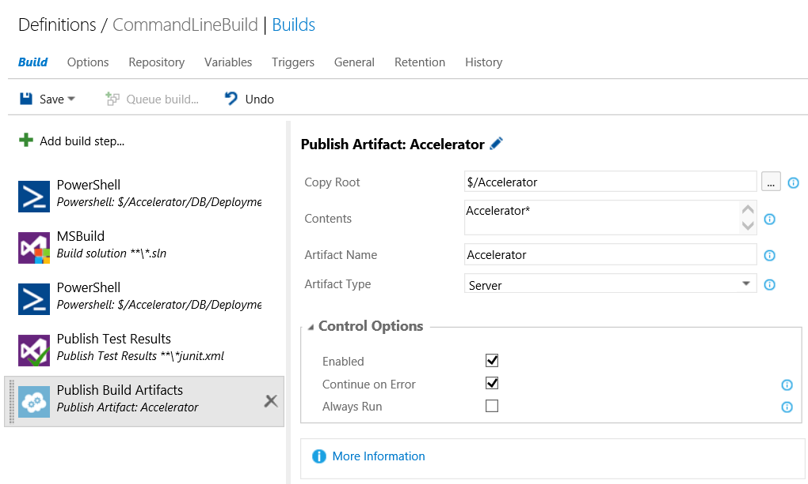
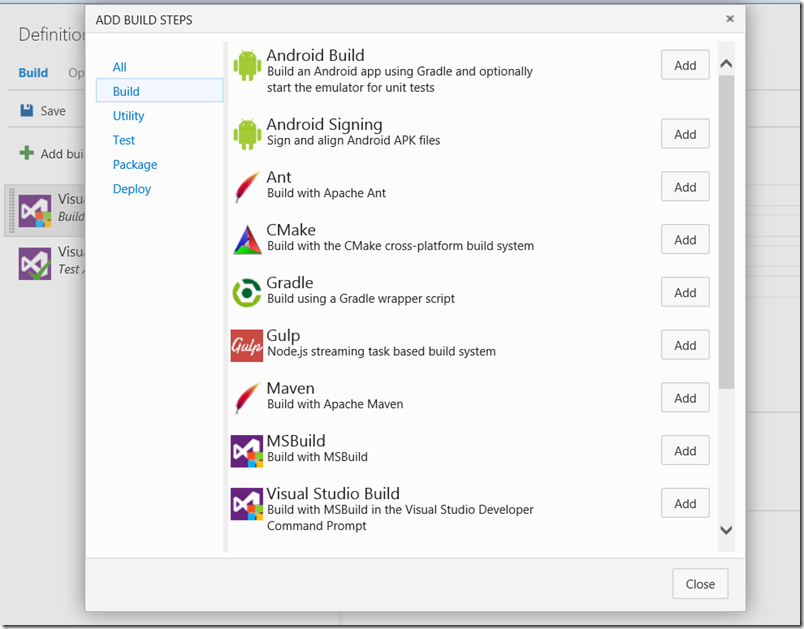
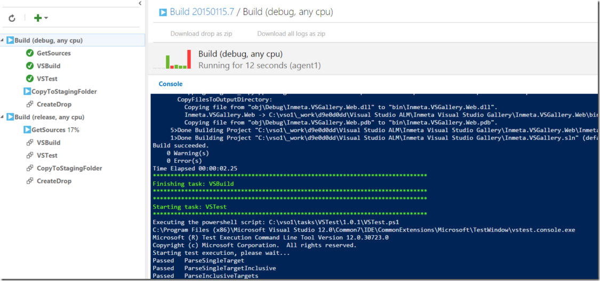
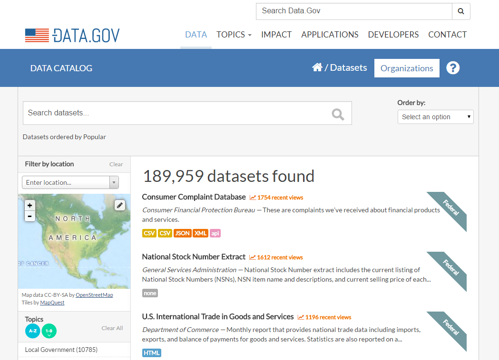
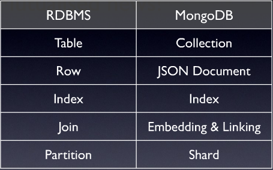
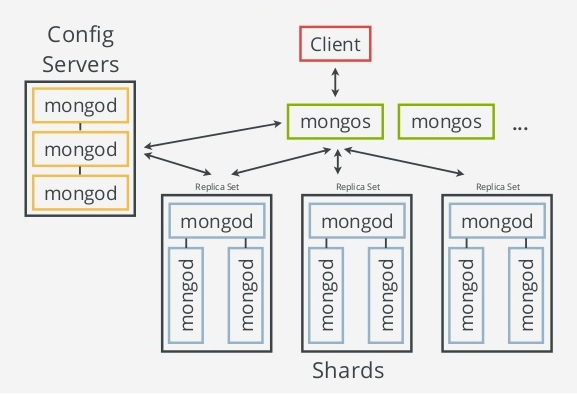
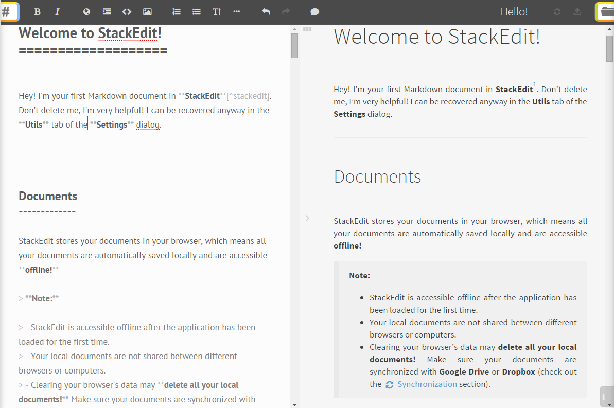
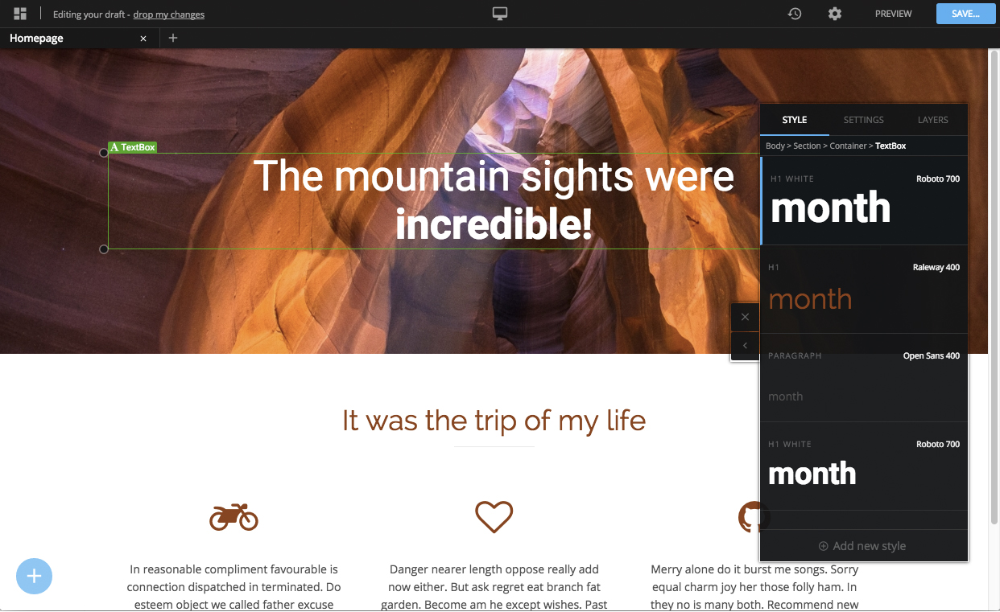

Developer Ideas
Logging
Unify disparate logging systems (file system, event log, database)
Gain useful application insights (usage, errors, statistics)
Flexible enough to store data unique to each application
Report on that data in real-time
Alert us on critical application errors or epochs
We already have similar systems in place for our infrastructure
It's time we bring this concept to our applications
ELK
Elasticsearch + Logstash + Kibana
Microsoft
Visual Studio Online + Application Insights
Exchange Platform
Exchanges are authored via web interface
Define a series of steps that make up an exchange
Steps are based on configuration and reusable scripts
Emphasizes configuration over code
Glorified IFTTT (If This Then That)
TFS Build vNext
Add a Step
View History/Status
External API
Direct source for third parties to access public information
Dissuade others from scraping our sites and services
Support for multiple data formats (JSON, XML, CSV, etc.)
Charge fractions of a penny for each API call as a convenience fee
Control data access on a per-agency basis, and empower agencies to solve their own problems
Third Party Example
https://data.oscn.net/cleveland/cases/1000.json{
"Id": 1000,
"County": "Cleveland"
"CaseNumber": "XY-2015-1",
"Style": "John Doe v. Oklahoma",
"FilingDate": "1/1/2015",
"Parties": [
{
"Id": 9000,
"FirstName": "John",
"LastName": "Doe",
},
...
],
...
}Warrant Collections Agency
https://data.oscn.net/cleveland/warrants.json?{"IssuedDate": "10/1/2015"}[
{
"Id": 6001, "Name": "John Doe", "IssuedDate": "10/1/2015", ...
},
{
"Id": 6039, "Name": "Jane Doe", "IssuedDate": "10/1/2015", ...
},
...
]Data.gov
Open Legislation
API for accessing legislative data from the NY State Senate

Other Benefits
Empower local developers through open data
Crowdsource development efforts
Get cool apps and publicity for free
Email updates when a case is updated, anyone?
Node.js
Built on Google's V8 JavaScript engine - incredibly fast
Asynchronous - thousands of concurrent connections
Efficient - uses virtually no CPU or RAM when there is no activity
Unified language (JavaScript) across the stack
Node Package Manager (NPM)
Publically available, reusable components
Greatly simplifies dependency management
Large community of contributors
Nearly 200,000 packages available
Simple Node Web Server
var http = require('http');
http.createServer(function (req, res) {
res.writeHead(200, {'Content-Type': 'text/plain'});
res.end(myJavascriptObject.getSomeStatusInfo());
}).listen(1337, "127.0.0.1");Who uses Node.js?
Netflix • Dow Jones
eBay • Ancestry.com
Shutterstock • LinkedIn
New York Times • Uber
GoDaddy • Microsoft
Cons
Designed for speed and throughput, not computation
Written in JavaScript
Works best with NoSQL data stores
MongoDB
Named after the word huMONGOus
NoSQL data store
Built for scalability and high availability
Comparison to SQL
Example Document
{
"_id": "AF567G78B5723",
"title": "Sgt. Pepper's Lonely Hearts Club Band",
"artist": ObjectId("507f191e810c19729de860ea"),
"tracks": [
{
"trackId": 1,
"title": "Sgt. Pepper's Lonely Hearts Club Band",
"length": "2:02",
"composer": [
{"last": "Lennon", "first": "John"},
{"last": "McCartney", "first": "Paul"}
]
},
{
"trackId": 2,
"title": "With a Little Help From My Friends",
"length": "2:44",
"composer": [
{"last": "Lennon", "first": "John"},
{"last": "McCartney", "first": "Paul"}
]
},
...
],
"year": 1967,
"cover": "AF567G78B5723.jpg"
}Shards and Replica Sets
Why use MongoDB over SQL?
I DON'T KNOW
The question should be:
What is the right system for OCMS?
Docker
Containers
How it fits together
Rancher
Wiki
BAs provide documentation and training materials in the form of disparate documents and emails
Provide a better delivery mechanism for documentation
Allow BAs to author and publish materials easily
Easy to access, search, and customize
Internal knowledge base for teams or clerks
StackEdit
Write documents using Markdown, a lightweight markup language used on sites like StackOverflow and reddit
Relax
New generation CMS on top of React and Node.js
Ideabox
Collect and surface ideas from users
Transparent - all ideas are tied to users
Voting
Comments
Sort by comments, likes, or age
Microsoft

Best Buy
Stack Overflow
18F